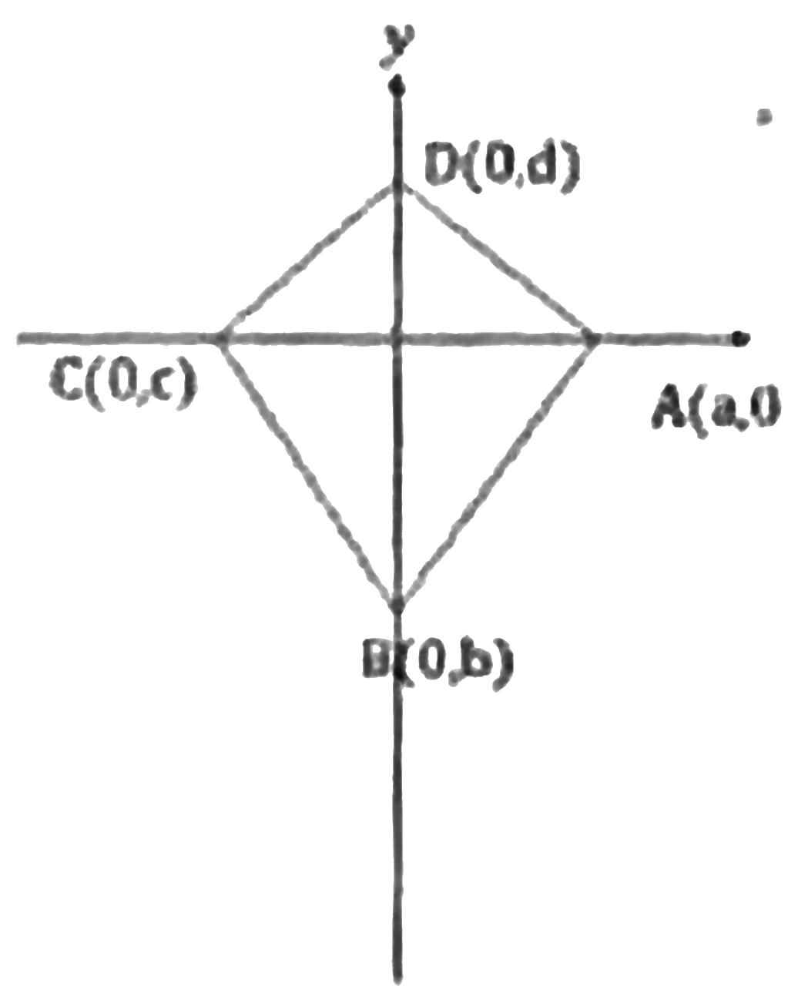

x ו־y הם מספרים שלמים. נתון: 9 ≤ x² ≤ 81 , 25 ≤ y² ≤ 100
ערכו המינימלי של הביטוי yx הוא:
ל־60% מתושבי חיפה יש חיית מחמד כלשהי בבית. איזה מהמספרים הבאים יכול להיות מספר תושבי העיר חיפה שלהם יש חיית מחמד כלשהי בביתם?
לכל מספר x הוגדרה הפעולה $ כך: $(x) = x² · (x² + 1) · (x² − 4)
מהו תחום הערכים של x שעבורו מתקיים $(x) > 0 ?
שני רצים תכננו לצאת לריצת לילה מנקודה A לנקודה B. שניהם משתמשים במפות בעלות קנה מידה זהה. אורך מסלולו של הרץ הראשון על המפה הוא 30 ס"מ. אורך מסלולו של הרץ השני על המפה הוא 40 ס"מ. מהירותו של הרץ הראשון קטנה ב־25% ממהירותו של הרץ השני. אם שניהם יצאו באותו הזמן מנקודה A, מה מהבאים נכון בהכרח?
לעידן הייתה קוביית בצק שאורך מקצועה הוא 3πh. עידן הסיר מהקובייה חתיכת בצק שנפחה הוא 2π³h³. מחתיכת הבצק שנותרה הוא יצר גליל חדש שאורכו h.
מה רדיוס הבסיס של הגליל החדש?
A, B ו־C הן אותיות המייצגות ספרות שונות זו מזו בין 1 ל־9. נתון: B = 2A ,
AB × B ----- 2CB
B − C − A = ?
13√5 + 4√180 = ?

במערכת הצירים שלפניכם מסורטט דלתון (BA = BC , DA = DC) שקודקודיו מונחים על הצירים.
לפי הנתונים שבסרטוט, איזו מהטענות הבאות נכונה בהכרח?
נתון: a < b < |b + c| < a + b
איזו מהטענות הבאות נכונה בהכרח?
מה היחס בין שטח משולש שווה צלעות לשטח מעגל החסום בו?